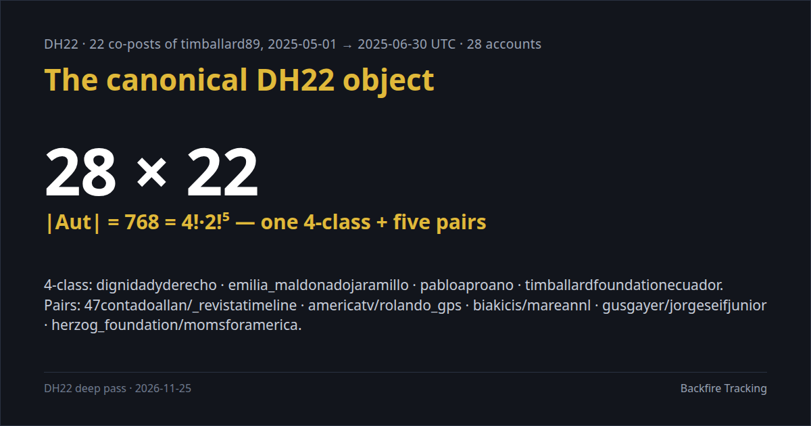
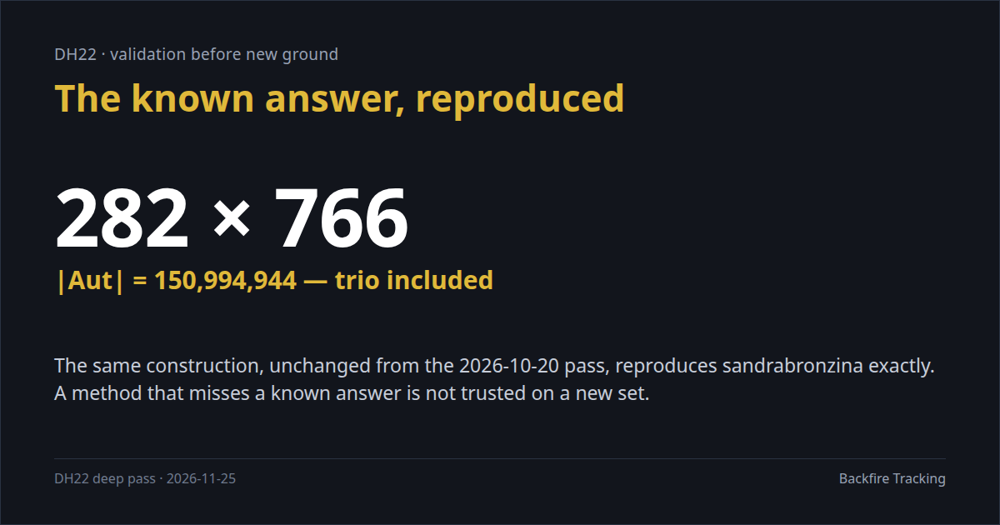
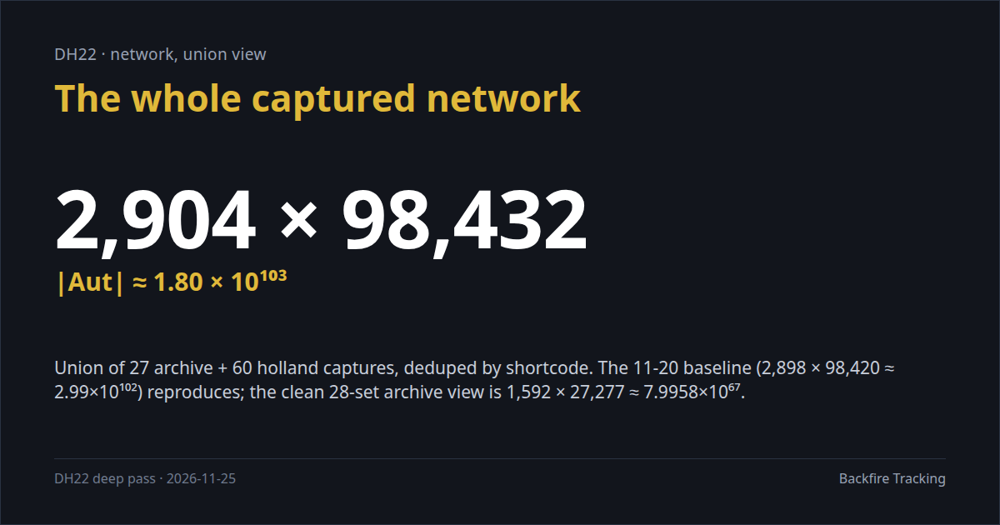
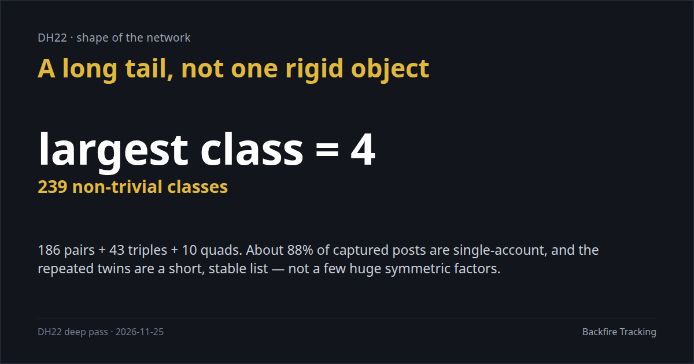
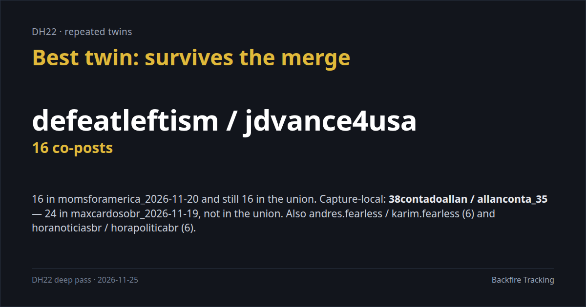
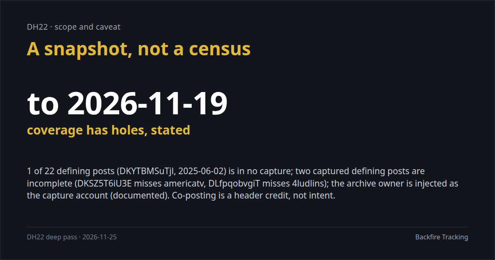

DH22 deep pass — six plain cards
DH22 = the 22 co-posts of timballard89, 2025-05-01 – 2025-06-30 UTC, 28 accounts · snapshot to 2026-11-19 · 2026-11-25

Card 1 — The canonical DH22 object

Card 2 — The known answer, reproduced

Card 3 — The whole captured network

Card 4 — A long tail, not one rigid object

Card 5 — Best twin: survives the merge

Card 6 — A snapshot, not a census